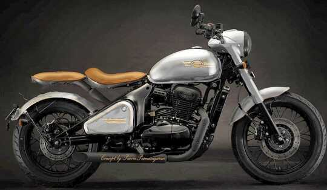
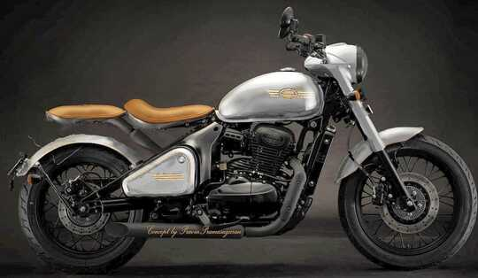

Jawa is a good bike to visual appeal its power was better
than royal enfield 350 classic, Honda highness,
meteor 350. Riding experience was very good,
better than other brands in same segment.
Very soon am going buy this jawa 4.2
The Perak name actually pays homage to a symbol of
resistance from 1940's Czechoslovakia, the home of the Jawa brand.
Jawa revealed the story behind the name through an animated clip
that traces the story of the Perak.
Perak How it came to be
According to the company website, the Perak motorcycle traces back to war-torn Europe when Czechoslovakia,
home of the Jawa motorcycle, was under Nazi occupation. Jawa was brought to a stark halt,
as their factories were taken over by the SS. A team of Jawa engineers, led by Dr.
J Frei, worked in secrecy on a new project. This team, which included
Josef Jozil and Rudolphe Vykoukal, knew the perils of war couldn’t last forever and
the world would one day be ready for a new Jawa motorcycle. When the war was declared over,
the new motorcycle – called the Perak – was ready.
In Indian hands
Classic Legends, a subsidiary of the Mahindra & Mahindra Group,
now holds the rights to Jawa Perak, and sells it across India
and East Asian markets, according to the 2016 deal between the two.
Powering the Perak
The Jawa Perak comes with a 334cc single-cylinder which is liquid-cooled,
and produces 32.74 PS of power and 31 Nm of torque. It also has a sweet
DOHC setup. The bobber-style motorcycle oozes vintage and retro aesthetic
and is popular among motorcycle enthusiasts.

 
